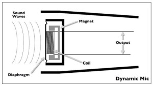
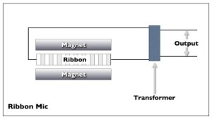
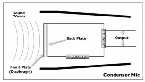

Mikrofony dynamiczne.

Fale dźwiękowe wprawiają w ruch membranę z przytwierdzoną cewką, która porusza się w stałym polu magnetycznym. Wykorzystuje się efekt indukcji elektromagnetycznej.
Z racji tego, że generowany output zależy od prędkości z jaką porusza się cewka, to mikrofony dynamiczne określa się również mianem zależnych od prędkości (velocity sensitive).
To jak bardzo mikrofon będzie reagował na transjenty i wysokie częstotliwości zależy od tego, jaka jest waga elementów wprawianych w ruch. Z racji tego, że w tej konstrukcji w ruch wprawia się membranę oraz cewkę, traktuje się ten typ mikrofonów jako ciężki. Z tego względu te mikrofony nie nadają się do rejestrowania dźwięków powyżej 10k Hz.
Poza tym te mikrofony posiadają częstotliwość rezonansową rzędu 1k - 4k Hz. Z tego względu są one preferowane przez wokalistów.
Mikrofony takiego typu o poszerzonym zakresie częstotliwości oraz o płaskiej equalizacji są znacznie droższe ze względu na skomplikowanie konstrukcji.
Zalety:
Wytrzymałe i odporne
Proste konstrukcje są tanie
Odporne na wilgotność powietrza
Nie wymagają zasilania do działania
Potrafią być małe
Dobrze radzą sobie z wysokim ciśnieniem
Wady
Posiadają częstotliwość rezonansową rzędu 1k - 4k Hz
Z reguły nie nadają się do rejestrowania dźwięków powyżej 10k Hz.
Ribbon Microphone (mikrofon wstęgowy)
Zasada działania jest bardzo podobna do mikrofonów dynamicznych. Różnica polega na tym, że membrana z cewką zostaje zastąpiona wstążką aluminiową, która wprawiana w ruch w stałym polu magnetycznym generuje prąd. Następnie sygnał jest wzmacniany przez transformator do użytkowego poziomu.

Zalety
Płaska charakterystyka
Znacznie większy zakres nagrywanego dźwięku (do 14k Hz)
Nie wymaga zewnętrznego zasilania do działania
Wady
Podatne na uszkodzenia
Drogie
Może ulec uszkodzeniu jeśli zostanie podłączony do napięcia fantomowego na dłuższy czas.
Mikrofony wstążkowe to stara konstrukcja z lat 30-tych, która ostatnio zyskuje na coraz to większej popularności. Zostały one wyparte w latach 40-tych przez mikrofony pojemnościowe ze względu na ich rozmiar - prezenter telewizyjny źle prezentował się przed ogromnym mikrofonem.
Ostatnio część firm wznowiła produkcję mikrofonów wstążkowych, m.in.: Coles, Beyer, Royer i AEA.
Mikrofony pojemnościowe
Posiadają dwie równoległe płytki, z których jedna robi za membranę. Poruszając się, zmienia w ten sposób pojemność tak utworzonego kondensatora, a w konsekwencji napięcie jakie kondensator generuje. Jednakże zmiany są na tyle małe, że należy zastosować wzmacniacz do podbicia różnicy potencjałów. Z tego względu (i ze względu na kondensator) należy zastosować zasilanie zewnętrzne 48V (napięcie fantomowe).

Mikrofony pojemnościowe rezonują w częstotliwościach 8k - 12k Hz.
Podtypem mikrofonu pojemnościowego jest mikrofon elektretowy, gdzie kondensator wykonano z elektretu, dielektryka o trwałej polaryzacji elektrycznej. Dzięki temu możliwe było zniesienie zasilania fantomowego. Montowany głównie w tanim sprzęcie (np. słuchawkach do telefonu).
Zalety
Doskonałe odtwarzanie wysokich częstotliwości i składowych harmonicznych.
Mogą dobrze nagrywać niskie częstotliwości.
Doskonale reagują na transjenty.
Mają różne charakterystyki kierunkowości.
Wady
Generalnie drogie
Wymagają zasilania fantomowego
Duże
Tanie modele nie mają płaskiej equalizacji
Dwa mikrofony tego samego modelu mogą brzmieć inaczej
Wilgotność powietrza i temperatura mają wpływ na charakterystykę
Mity o mikrofonach pojemnościowych:
Wielkość membrany nie ma przełożenia na odtwarzane częstotliwości, np. większa membrana wcale nie musi być lepsza w odtwarzaniu niskich częstotliwości. Fakt, większa membrana lepiej "chwyta" niskie częstotliwości, ale z racji swojej zwiększonej masy wcale nie musi lepiej reagować.
Kartoidalne (kierunkowe) mikrofony wcale nie odtwarzają niskich częstotliwości lepiej od wszechkierunkowych mikrofonów.
Większa membrana wcale nie jest bardziej płaska w charakterystyce.
Im większa membrana tym generowany prąd jest większy, ale to wcale nie oznacza, że współczynnik sygnału do szumu będzie lepszy. W konsekwencji sygnał generowany przez większą membranę może okazać się cichszy.
Mikrofony pojemnościowe różnią się między sobą nawet w obrębie tego samego modelu.
Jak użytkować mikrofony pojemnościowe:
Podstawowy problem z mikrofonami pojemnościowymi jest taki, że naładowany kondensator przyciąga cząsteczki kurzu. Z czasem warstwa może być na tyle gruba, że membrana zatraci swoją charakterystykę, głównie w wysokich częstotliwościach.
Zawsze używaj ekranu (pop filter)
Zawsze zamykaj mikrofon pojemnościowy w pudełku.
Jeśli ustawiony mikrofon ma stać przez noc, przykryj go płachtą.
Utrzymuj mikrofon w stałej temperaturze i wilgotności, jeśli skondensuje się na nim woda, to do czasu aż nie odparuje nagrywanie może okazać się niemożliwe.
Nie dmuchaj w mikrofon. Membrana może się tak odkształcić, że "przyklei się" do stałej płytki. Odłączenie zasilania powinno pomóc.
Mikrofon pojemnościowy może być przeładowany co będzie powodować przestery. Przyczyną tego jest zbyt duży prąd generowany przez wzmacniacz. Należy użyć przycisku "pad" lub przefiltrować niskie częstotliwości.
Specyfikacje techniczne mikrofonów.
Czułość (sensitivity).
Jakie napięcie generuje mikrofon przy określonym ciśnieniu. Najcichsze są mikrofony wstęgowe (ribbon), najgłośniejsze są mikrofony pojemnościowe (ze względu na posiadany wzmacniacz).
Ma to o tyle znaczenie, że mikrofony pojemnościowe mogą przeładować przedwzmacniacz konsoli, mikrofonu czy interfejs DAW.
Z drugiej strony mikrofony wstęgowe mogą generować tak niski sygnał, że szum przedwzmacniacza może być słyszalny.
Sygnał oznacza się z reguły ujemnymi wartościami dB, więc im bliżej 0 dB, tym silniejszy sygnał generuje mikrofon.
Free-Field oznacza mikrofon, który zbiera dźwięk tylko z źródła sygnału. Mają płaską charakterystykę w wysokich częstotliwościach, przez co brzmią głucho gdyby ustawić je zbyt daleko od źródła dźwięku.
Diffuse-Field oznacza mikrofon, który zbiera dźwięki z otoczenia. Mają zboostowane wyższe częstotliwości, co pozwala na ich umieszczenia z dala od źródła sygnału, ale umieszczone zbyt blisko generują zbyt jasny dźwięk.
Szum może być generowany przez sam mikrofon, albo wynikać ze słabego tłumienia wstrząsów.
Mikrofony pojemnościowe generują dużo szumów ze względu na niski output, który musi zostać wzmocniony wzmacniaczem. Mikrofony dynamiczne i wstęgowe muszą być dobrze izolowane od wstrząsów, by nie generować szumów.
Należy pamiętać, że kierunkowość mikrofonu zależy również od częstotliwości. W jednym zakresie mikrofon może być kierunkowy (z reguły w wyższych częstotliwościach), a w innych zupełnie wszechkierunkowy.
Wyróżniamy główne charakterystyki kierunkowości:
wszechkierunkowa,
dwukierunkowa lub 8,
kartoidalna,
hiperkartoidalna.
Poza tym należy pamiętać, że zmienia się charakterystyka nagrywanego dźwięku w zależności od odległości od źródła dźwięku.
Inne typy mikrofonów to:
shotgun mic (kierunkowe mikrofony),
Lavaliere mic,
pressure-zone mic (PZM),
mikrofony bezprzewodowe (systemy bezprzewodowe),
mikrofony stereo,
mikrofony paraboliczne,
binaural microphone.
Akcesoria do mikrofonów:
Pop filter (osłona). Warto pamiętać, że turbulencje, które zachodzą za osłoną wymagają kilka cali na ustabilizowanie się, więc nie warto przykładać popa do mikrofonu, lepiej przyłożyć go do ust i oddalić go od mikrofonu.
Windscreen.
Shock mount.
Klasyczne mikrofony
RCA 44 Ribbon Mic
Pierwsze modele wyszły 1931! Produkowany do 1955.
RCA 77 Ribbon Unidirectional
Pierwsze modele wyszły w latach 30-tych. Produkowany do 1973.
Neumann U 47
Pierwszy model wyszedł w 1948 roku.
Neumann U 47 FET
Pierwszy model wyszedł w 1969 roku. Doskonale radzi sobie z wysokim ciśnieniem.
Neumann U 67
Pierwszy model wyszedł w 1960-tym.
Neumann M 49 / 50
Stworzony w 1949 roku. M 50 stworzony został z myślą o nagrywaniu orkiestry symfonicznej, stąd duży boost wysokich częstotliwości.
Neumann KM 84 Series
Pierwszy model powstał w 1966 roku. Pierwszy mikrofon pojemnościowy zasilany fantomowo i jeden z pierwszych mikrofonów FET. Produkowany do 1988.
Neumann KM 54 / 56
Neumann U 87
Wprowadzony 1967.
AKG D 12 / 112
Wersja D 12 została wprowadzona w 1953 i był to pierwszy mikrofon dynamiczny o kartoidowej charakterystyce. Początkowo używany do wokalu, później stał się standardem w nagrywaniu centrali. Następca D 112 jest mikrofonem wyspecjalizowanym w nagrywaniu basu i centrali.
AKG C 12
Stworzony w 1953, produkowany do 63.
AKG C 451
AKG 414 Series
Sony C-37A
Wprowadzony w 1955. Ostatecznym spadkobiercą serii C-37 pozostał Sony C-800G, używany między innymi przez Spencera Sotelo. Niestety, nie jest już produkowany.
Schoeps M 221B
STC/Coles 403B
Wprowadzony 1954, produkowany po dziś.
Shure SM57
Wprowadzony w 1965.
Sennheiser MD 421
Bardzo popularny mikrofon do nagrywania tomów lub gitarowych głośników.
Sennheiser MD 441
Beyer M 160
Electro-Voice RE20
Kopie klasyków.
Audio Engineering Associates
Tworzą kopie RCA, np. AEA R44 jako kopia RCA 44.
Bock Audio Designs (Formerly Soundelux)
Klepią kopie ELA M 251 jako 251 oraz 241, klon U 47 jako 5-ZERO-7, klon U 47 FET jako iFET.
Mojave Audio
Kopia U 67 jako MA-200, C 12 jako MA-300, Schoeps M 221 lub Neumann KM 56 jako MA-100.
Pearlman Microphones
Szeroki wybór kopii U 47.
Peluso Microphone Lab
Kopie 251, U 47, RCA 77, Schoeps CMC.
Telefunken Elektroakustik
Kopie ELA M 251 oraz U 47.
Wunder Audio
Kopie U 67, 251, U 47, C 12, M 49/50, U 47 FET.
Modeling Mics
Z racji ceny klasyki odpadają. Całkiem fajnym rozwiązaniem jest więc stosowanie programów modelujących, jak np. Townsend Labs Sphere L22 (
townsendlabs.com) lub Slate VMS Virtual Modeling System.
Generalnie wszystkie powyższe kopie zaczynają się od kilku tysięcy zł w górę.
Nowe klasyki
Audio-Technica AT4050/4033
Mikrofon pojemnościowy, który dobrze radzi sobie z dużym ciśnieniem.
AT4050 kosztuje ponad 3000 zł (700 euro), AT4033 kosztuje 400 euro (1700 zł).
Heil Sound PR 40
Preferowany mic do nagrywania centrali, radzi sobie z dużym ciśnieniem i niskimi częstotliwościami oraz boostuje częstotliwości od 2,5k do 4,5k Hz.
Kosztuje 1900 zł (435 euro).
Royer R-121
Mikrofon wstęgowy, jednak o znacznie wyższym prądzie wyjściowym oraz znacznie bardziej odporny na duże skoki ciśnienia.
Kosztuje 6000 zł (1400 euro).
Shure Beta 52A
Mikrofon stworzony z myślą o nagrywaniu centrali i basu. Podbija częstotliwości 300 Hz, 600 Hz oraz 4 kHz. Dodatkowo radzi sobie z ekstremalnie wysokim ciśnieniem rzędu 178 dB.
Kosztuje 730 zł (170 euro).
Shure SM81
Wprawdzie wprowadzony w 1978, powoli zyskuje na popularności. Płaska charakterystyka, niski szum, wytrzymały i odporny na zmiany temperatury, używany przeważnie tam gdzie potrzebujesz małego mikrofonu pojemnościowego.
Kosztuje prawie 1500 zł (333 euro).
Yamaha SKRM-100 Subkick
Próba odtworzenia częstotliwości mniejszych niż 60 Hz z centrali. W zasadzie to podłączony głośnik, który wprawiony w ruch generuje prąd.
Tanie mikrofony.
Behringer B-1
Pojemnościowy mikrofon o charakterystyce kartoidowej. 340 zł (77 euro).
Cascade FAT HEAD
Mikrofon wstęgowy. 160$.
MXL 2006
Mikrofon pojemnościowy. 100 euro.
Octava MK-012
Mikrofon pojemnościowy o wymiennej główce w celu zmiany charakterystyki. Ceny wahają się od 170 euro do 350 euro.
RØDE NT1-A
Mikrofon pojemnościowy do wokalu robiony w Szwecji. 650 zł (150 euro). Wersja NT2-A posiada wbudowany HPF, zmianę charakterystyki oraz pad (285 euro).
sE Electronics sE2200a
Mikrofon pojemnościowy kartoidowy. 220 euro. 280$.
Studio Projects C1
Mikrofon pojemnościowy kartoidowy. 240 euro.
ADK A-51 Mk 5.1
Mikrofon pojemnościowy, teraz praktycznie nie do dostania.